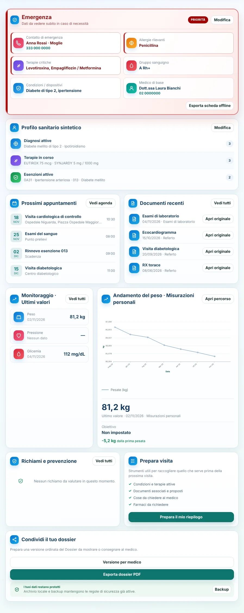
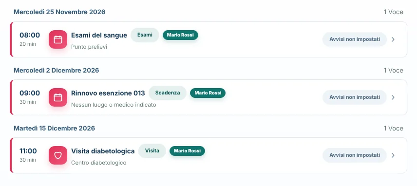
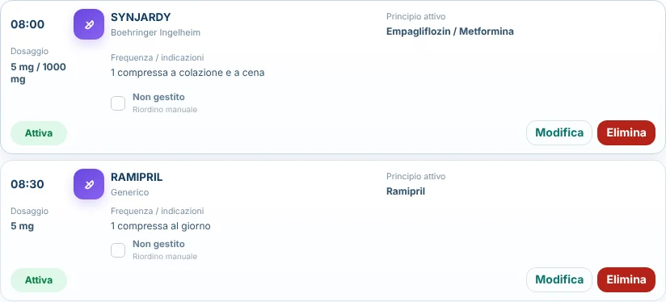
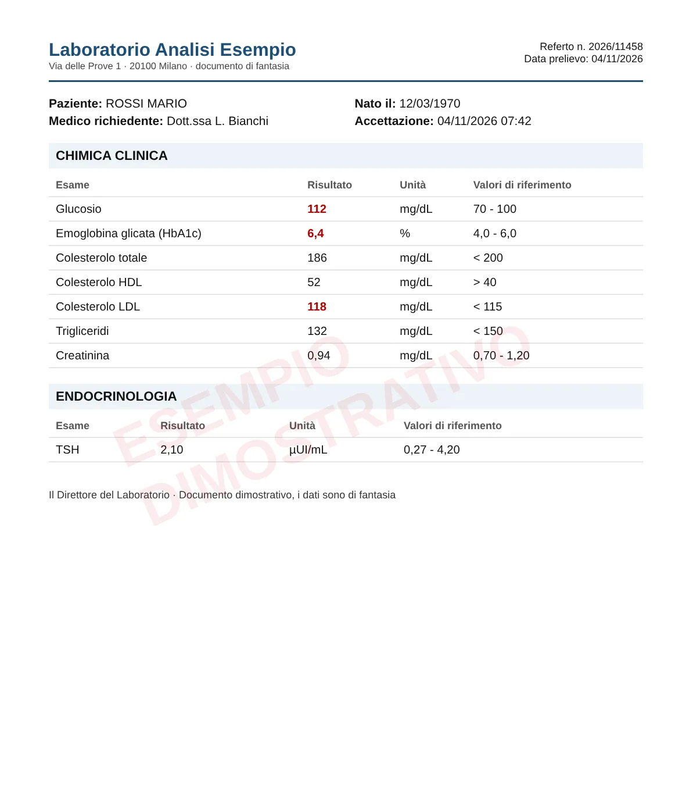
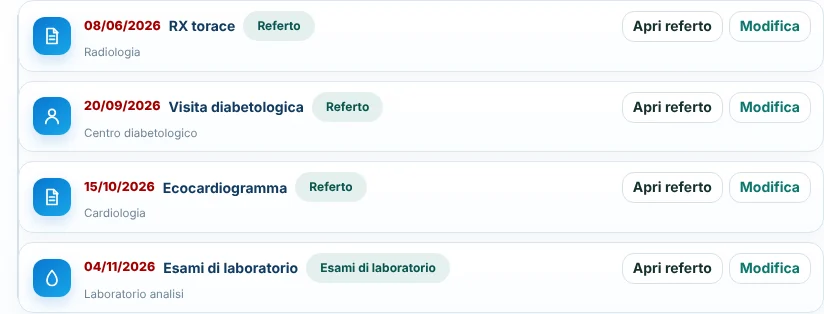
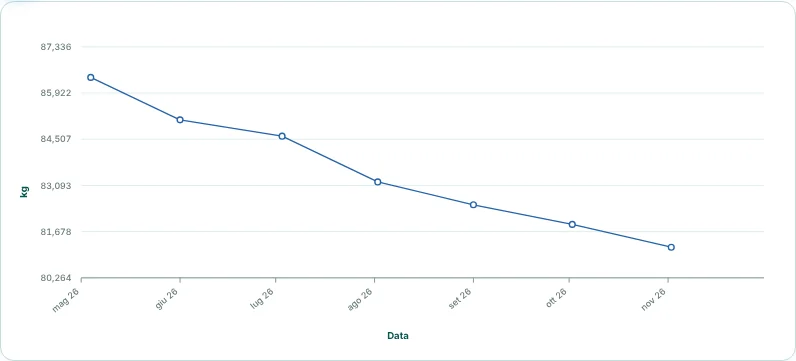
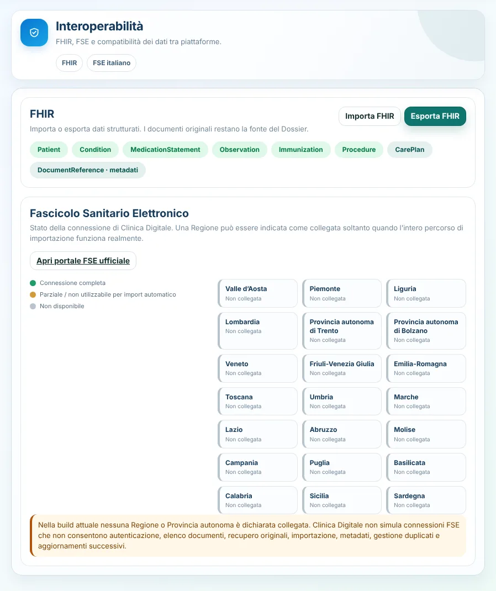

Ecco come appare il Dossier · Mario Rossi è un profilo di fantasia
Buongiorno, Mario!
Qui trovi un riepilogo della tua situazione sanitaria e delle prossime attività.
Anteprima della Panoramica

Agenda
Visite, esami e scadenze di tutta la famiglia.
Nuovo appuntamento
- Profilo
- Mario Rossi
- Data e ora
- 18/11/2026 · 10:30
- Struttura
- Ospedale Niguarda, Piazza Ospedale Maggiore 3, Milano
- Note
- Portare l'ultimo ecocardiogramma e l'elenco dei farmaci.
Anteprima delle altre voci

Terapie
Orari, dosaggi, scorte e riordino dei farmaci.
Anteprima delle altre terapie

Documenti
Carichi un referto e il Dossier ne legge il contenuto.
Leggi un referto
Nella demo usiamo un referto di esempio con dati di fantasia. Nel Dossier vero carichi i tuoi PDF o le foto, e la lettura avviene sul tuo dispositivo.

Esami di laboratorio del 04/11/2026
| Esame | Valore | Riferimento |
|---|---|---|
| Glucosio | 112 mg/dL | 70 - 100 |
| Emoglobina glicata | 6,4 % | 4,0 - 6,0 |
| Colesterolo totale | 186 mg/dL | < 200 |
| Colesterolo HDL | 52 mg/dL | > 40 |
| Colesterolo LDL | 118 mg/dL | < 115 |
| Trigliceridi | 132 mg/dL | < 150 |
| Creatinina | 0,94 mg/dL | 0,70 - 1,20 |
| TSH | 2,10 µUI/mL | 0,27 - 4,20 |
3 valori fuori intervallo. Nel Dossier vero finiscono anche nei grafici, per seguirli nel tempo.
Anteprima della cronologia clinica

Monitoraggio
Peso, pressione, glicemia e altri valori nel tempo.
Percorso peso

Interoperabilità
Import ed export dei dati sanitari.
Al momento nessuna Regione mette a disposizione un collegamento ufficiale che permetta ad app come il Dossier di scaricare da sole i documenti dal Fascicolo Sanitario Elettronico. Per questo tutte le Regioni risultano "Non collegata".
Il regolamento europeo sui dati sanitari prevede che in futuro ciascuno possa scaricare liberamente i propri dati dal Fascicolo della propria Regione. Il Dossier legge già i referti in PDF e i dati in formato FHIR, lo standard internazionale per lo scambio dei dati sanitari: quei file potrai caricarli qui. Nel frattempo puoi già caricare i referti che scarichi oggi dal tuo Fascicolo.
Anteprima della sezione
